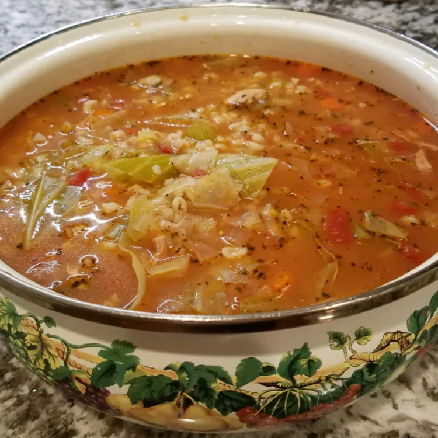

Turkey Carcass Soup

Turkey Soup
A turkey carcass soup is the answer when you don't want to waste a single
bite of turkey. This is a delicious soup and one of my favorites. If you
want to freeze some, leave out the potatoes.
Ingredients
Make the Broth
-
Place the turkey carcass in a large pot and cover with water. Bring to a
boil, then reduce to a simmer and continue cooking until the remaining
meat falls off the bone. Remove and chop the meat and discard the bones.
Strain the broth into a clean soup pot.
Make the Soup
-
Add the chopped turkey to the strained broth and bring to a boil. Reduce
the heat and add the remaining ingredients (tomatoes, potatoes, carrots,
onion, celery, cabbage, barley, Worcestershire sauce, salt, parsley,
basil, bay leaf, pepper, paprika, poultry seasoning, and thyme). Cook
until the vegetables are tender.
Steps
- 1 turkey carcass
- 4 quarts water
- 1 (28 ounce) can whole peeled tomatoes, chopped
- 6 small potatoes, diced
- 4 large carrots, diced
- 1 large onion, diced
- 2 stalks celery, diced
- 1 ½ cups shredded cabbage
- ½ cup uncooked barley
- 1 tablespoon Worcestershire sauce
- 1 ½ teaspoons salt
- 1 teaspoon dried parsley
- 1 teaspoon dried basil
- 1 large bay leaf
- ¼ teaspoon freshly cracked black pepper
- ¼ teaspoon ground paprika
- ¼ teaspoon poultry seasoning
- 1 pinch dried thyme